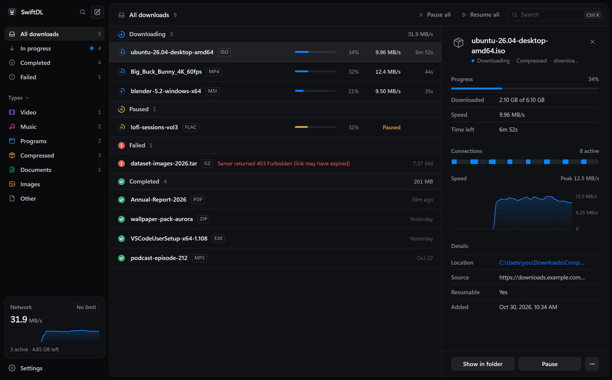

Your browser downloads
one connection at a time.
ubuntu-26.04-desktop-amd64.iso
There's a faster way.
SwiftDL
One file. Many connections.
ubuntu-26.04-desktop-amd64.iso
0%
1
connections
2.1
MB/s
speed
47m
left
Built for big files.

Pause it.
Close it.
Crash it.
It picks up exactly where it left off.
Now with YouTube.
Big Buck Bunny 60fps 4K.mp4
youtube.com
2160p60
1.9 GB
1440p60
980 MB
1080p60
412 MB
720p60
198 MB
Audio only
9.8 MB
Start download
Downloading
SwiftDL
Every download, at full speed.
Free and open source · Windows, macOS and Linux
github.com/harshsinghsv/swiftdl